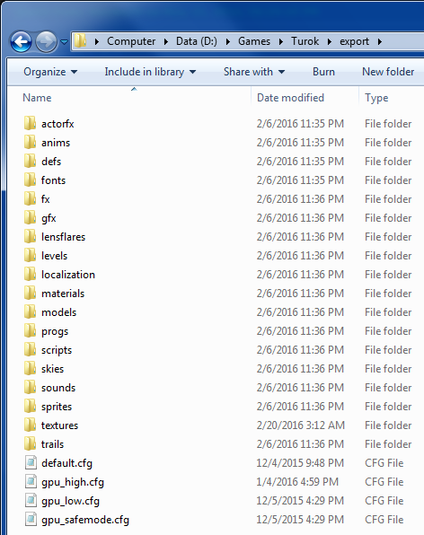
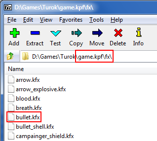
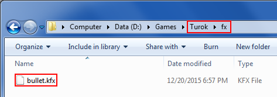
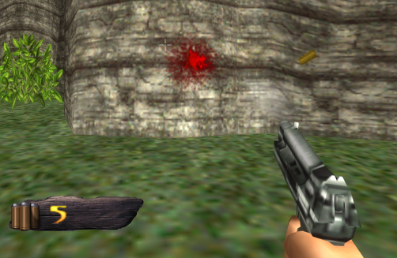
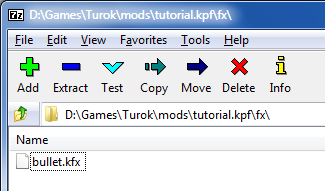

Getting Started
This guide covers the very basics of modding Turok EX. It explains how to get at the game's data files, how to override and modify those files, and how to package your mod for distribution.
File Priority
Turok EX has three places it looks for modifiable files, in the following order:
- Unpackaged Files
- Mod Packages
- game.kpf
The game stops going down the list as soon as it finds the file it's looking for, so files higher on the list override those which are lower on the list.
game.kpf
A package in the game's root directory where all the game's default data is stored. Mods override the files in this package, and any files which aren't overridden will fall back on the versions in game.kpf.
You should not modify this file. Doing so is inconvenient and inefficient, both for modders and for players.
Mod Packages
Custom kpf files contained in a folder named "mods" in the game's root directory. These packages contain modified versions of a subset of the files contained in game.kpf (and potentially all new files), mirroring the folder structure inside game.kpf. Any files not present in these packages will fall back on the defaults in game.kpf.
When you're ready to release your mod, this is the format you should distribute it in.
Unpackaged Files
Files based in the game's root directory (following the same folder structure as inside game.kpf) have top priority, and will even override mod packages. These files will only be loaded if dev mode is active.
These are your work-in-progress files, and what you'll primarily be working with.
Setting Developer Mode
The first thing we want to do is enable dev mode so the game will load our unpackaged, work-in-progress files.
Open config.cfg in the game's root directory. Search for dev. You should find the following line:
seta developer "0"Change the 0 to a 1:
seta developer "1"If the line doesn't exist, simply add it yourself.
Extracting the Data
Before we start making changes, we'll generally want to make a copy of a file from game.kpf to use as a starting point. kpf files are just zip files with a different extension. You can open them manually in an archive manager, or you can rename their extension from kpf to zip and double click them. Just make sure you change it back to kpf when you're done if you use the latter method.
Making Changes
Now let's bring it all together and make a simple change to the game. We'll modify the pistol and assault rifle to leave blood on walls instead of making a spark.
Create a folder named "fx" in the game's root directory, and copy fx/bullet.kfx from game.kpf (or your extracted copy) into this new folder. Note how the folder structure mirrors that of game.kpf:


Open the copy of bullet.kfx you just made in a text editor like Notepad. Search for:
fx = "fx/spark.kfx"and change it to:
fx = "fx/blood.kfx"Save the file, start the game, and try out the new effect:
Distributing Your Mod
Once you're ready to share your mod, you should package it in its own kpf file.
Create a new zip file, and put all your modified files in it. As always, make sure to maintain the folder structure inside your zip file. Once you have all your files zipped up, change the zip file's extension to kpf. Create a "mods" folder in the game's root directory, and put your mod's kpf file in it.
Here's what our sample mod looks like once it's been packed up and placed in the mods folder:
Now you'll want to check that your packaged mod still functions as expected.
Disable dev mode by reversing the config change you made earlier. This ensures that we're only loading our packaged mod, and not our unpackaged work-in-progress files. Start the game and confirm that your mod is still working properly. If everything's in order, then your kpf is ready for distribution!